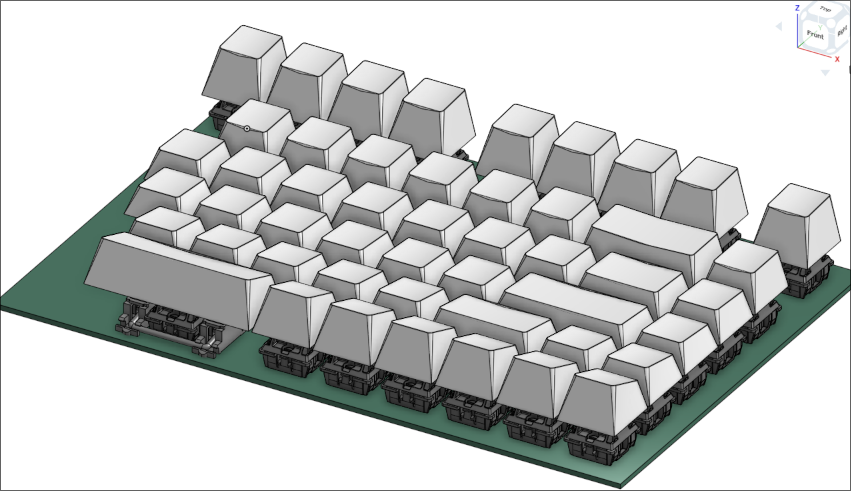
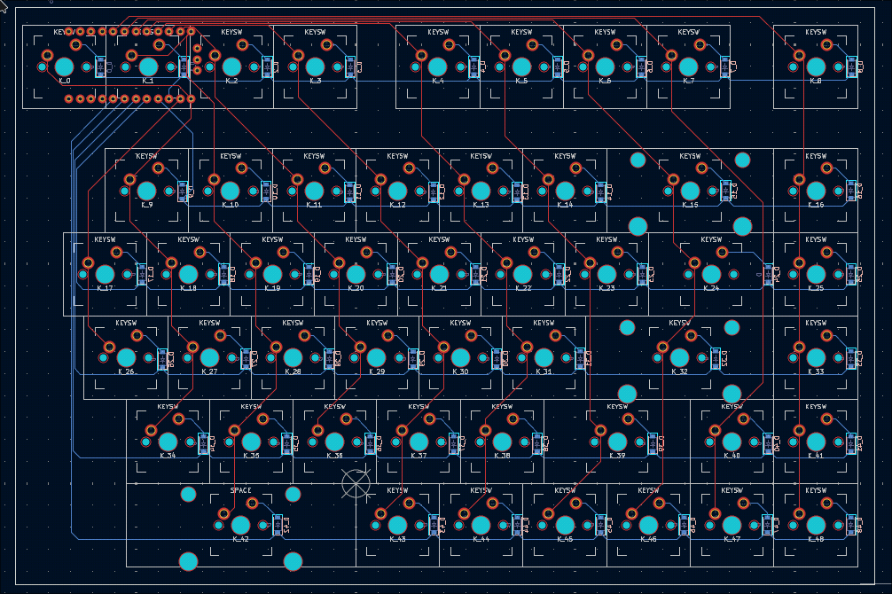

Split keyboard PCB (in progress)

Custom PCB for a split mechanical keyboard.
This whole project started with one key: Escape. My store-bought keyboard put it somewhere awkward, and after enough stretches across the board I decided to build my own split keyboard with Escape exactly where I wanted it.
I designed the PCB schematic and layout in KiCad, modeled the case in Onshape, and run the board on ZMK firmware. ZMK makes the split wireless and lets me remap any key, but the real fix is in the hardware: the physical layout is built around my hands instead of a standard row stagger.

Over-engineered for one key? Probably. But Escape now lands right under my finger, and that was the point.